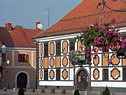

Croatia :: A Closer Look
|  |
Inland CroatiaAlthough Croatia's coast attracts most of the attention its contrasting inland regions have plenty to see, ranging from the Central European architecture of Zagreb and Varaždin to the tranquil beauty of Plitvice Lakes, and activities such as hiking in the Samobor hills or birdwatching in Slavonia. |

|
DubrovnikDubrovnik is one of the most famous tourist attractions in the Balkans, and with good reason. Although you could see the main sights in a day, it's worth lingering for longer: this article explains why. |

|
Six Adriatic TownsChoose your favourite port of call on the Adriatic mainland from Rovinj, Pula, Zadar, Šibenik, Trogir, and Split. |

|
Autumn in BolThe village of Bol on Brač Island boasts one of Croatia's most photographed beaches, but is it worth visiting when the summer crowds have gone? |

|
How to travel from Croatia to Greece (and vice versa)A whole page devoted to the single most common question asked by visitors to this site: what is the best way to get from Croatia to Greece? |